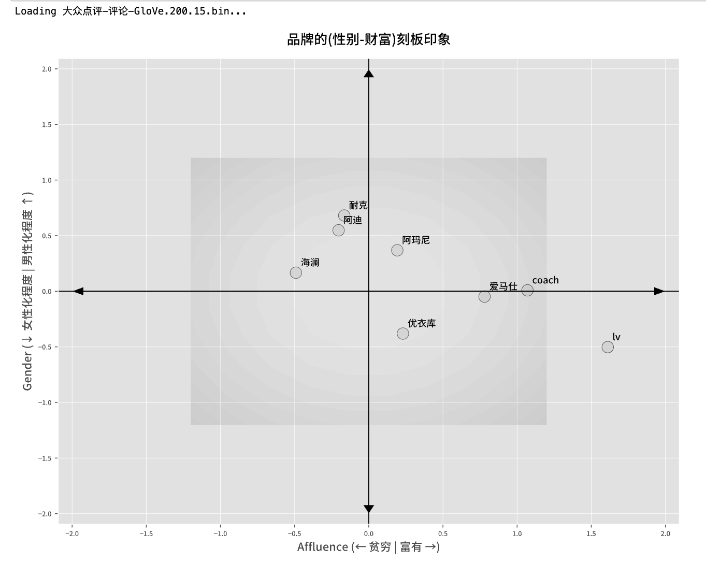

人类在留下语言、文字的过程中，也留下了自己的偏见、态度等主观认知信息（偏见、态度）。词嵌入做为一种词向量模型，可以隐含上下文的情景信息，态度及偏见很容易保留在词向量的某些维度中。通过词向量距离的测算，就可以间接测得不同群体 对 某概念(组织、群体、品牌、地域等)的态度偏见。
虽然现在LLM(大语言模型)很火，但其底层架构Transformer正是基于词向量(分布式语义表示)发展而来。LLM虽然能生成流畅的文本，但其"黑箱"特性使得我们难以直接分析其中蕴含的社会偏见。相比之下，传统的词嵌入模型(维度通常在50-300之间)虽然维度较高难以直观理解，但通过线性代数等数学工具，我们可以精确测量和分析词向量空间中的文化偏见和态度倾向。
下图所示， 在大众点评语料的词向量中蕴含着一些文化(态度或刻板印象)， 如提起旅行这件事， 大家脑海里首先想到的是一群年轻女性探索有趣的世界，世界那么大我想去看看。 而 高尔夫球， 在大家认知里是一群男性老板通过该活动社交谈生意。
一、文献
这篇文献挺老的，但是算法思路目前很有启发。
Kozlowski, Austin C., Matt Taddy, and James A. Evans. "The geometry of culture: Analyzing the meanings of class through word embeddings." American Sociological Review 84, no. 5 (2019): 905-949.
摘要
词嵌入模型是研究文化的有效工具，并以历史分析中对社会阶级的共同理解为实证案例。词嵌入模型通过将语义关系表示为高维空间中的向量关系，提供了一种与当代文化理论一致的关系模型。在这些空间中，词差异（如“富裕-贫穷”）所诱导的维度对应于文化意义的维度，而词在这些维度上的投影反映了广泛共享的文化关联——我们通过调查验证了这一点。通过分析过去一百年来出版的数百万本书籍的文本，我们发现阶级的标志在经济转型中不断变化，但阶级的基本文化维度保持显著稳定。值得注意的是，教育成为与富裕紧密相关的因素，独立于其与高雅品味的关联。
研究目的
验证词嵌入模型是否能够准确捕捉文化维度（如富裕、性别、种族等），并通过与人类评估的文化关联数据进行对比，证明其在社会学分析中的有效性。
研究设计
- 语料准备: 基于Google Ngram语料库训练，包含1900-2012年间出版的数百万本书籍的文本数据。
- 词嵌入模型: 基于语料训练词嵌入模型(GloVe或Word2Vec），这篇文章使用的Word2Vec。 词嵌入算法将文本中的单词表示为高维空间中的向量。这些向量基于单词在文本中的上下文关系，共享相似上下文的单词在空间中位置相近。
- 文化维度的识别: 通过计算反义词对的平均值来识别文化维度。例如，通过计算“rich”和“poor”等反义词对的差值，构建“富裕-贫穷”这一文化维度。
- 词向量投影: 将单词对应的词向量投影到特定的概念轴（文化维度，如性别、财富）向量上，计算其在该维度上的关联强度。 投影值通过余弦相似度衡量，正值表示与某一文化维度（如富裕）的正向关联，负值表示负向关联。
- 验证方法: 要求受访者对59个词汇（如“banker”“jazz”“nurse”）在三个维度（阶级、种族、性别）上进行评分(0~100)。例如“在0到100的范围内，您认为‘芭蕾舞’在多大程度上属于上层阶级？”； 通过调查数据验证词嵌入模型在捕捉文化关联方面的有效性。比较词嵌入模型与人类评估的文化关联数据，计算Pearson相关系数。
- 静态结果可视化: 通过图表展示运动词在不同文化维度(性别维度、财富维度)上的投影结果。
以上步骤证明了词嵌入投影算法捕捉人类社会文化(文本中蕴含的文化线索)的有效性，接下来按每10年构建一个语料(1900~2010)， 训练出不同年代的词向量。财富维度与六种阶级维度(教育、培养、地位、道德、职业、性别)余弦相似度的关系。 下图是六个维度的正反义词对儿。
研究结果
- 文化维度的有效性: 词嵌入模型在捕捉文化关联方面表现出色，与人类评估的相关系数在0.53到0.90之间。性别维度的关联最强，种族维度的关联较弱。
- 多维度的阶级结构: 阶级的文化维度形成了一个复杂但稳定的语义结构，包括财富、地位、教育、道德等维度。这些维度在高维空间中相互关联，无法通过低维空间准确表示。
- 社会阶级的文化维度演变: 分析结果显示，社会阶级的文化维度在二十世纪保持稳定，但具体的文化标记（如职业名称）发生了显著变化。教育和富裕之间的关联逐渐增强，成为阶级划分的重要标志。
二、实验准备
2.1 训练模型
使用 cntext2.x 训练出的预训练语言模型， 具体可参考
不考虑时间(语义演变)， 只训练一个模型 词向量 | 使用1亿B站用户签名训练word2vec词向量 词向量 | 使用Stanford Glove代码训练中文语料的Glove模型 词向量 | 使用1985年-2025年专利申请摘要训练 Word2Vec 模型 词向量 | 使用 MD&A2001-2023 语料训练 Word2Vec/GloVe 模型 词向量 | 使用人民网领导留言板语料训练 Word2Vec 模型
考虑时间因素， 按某个时间间隔(如每10年)，训练一个年代向量
如果觉得训练太麻烦， 大邓将已经训练好的模型免费提供给大家。 免费资源 | cntext2.x 训练出的免费公开词向量
2.2 读取模型
#pip3 install cntext --upgrade
import cntext as ct
# 模型下载地址
# https://github.com/hiDaDeng/Chinese-Pretrained-Word-Embeddings
wv = ct.load_w2v('大众点评-评论-GloVe.200.15.bin')
2.3 获取词向量
print(f'模型词汇量: {len(wv)}')
Run
模型词汇量: 278565
print(wv['富有'].shape)
print(wv['富有'])
Run
(200,)
array([-0.52744 , -0.108866, -0.119827, -0.644396, -0.342953, -0.503506,
-0.453796, -0.213651, 0.041335, 0.345231, 0.4752 , -0.026904,
-0.026971, -0.249429, -1.115758, 0.351041, -0.304552, 0.40272 ,
......
......
-0.061966, 0.384454, 0.280508, -0.005171, -0.236791, 0.171627,
0.151691, -0.295215, 0.233423, -0.146419, -0.210322, -0.338783,
0.214728, -0.101312, 0.489487, -0.257294, 0.732999, 0.057721,
-0.286473, 0.394552], dtype=float32)
词向量的维度是200，即每个词的语义是由200个数字组成的向量所表示。
2.4 计算概念轴向量
概念轴向量为例，如何计算呢？以性别为例，
1. 先找出性别(男、女)的正反义词对儿
2. 分别计算正词的多个向量、负词的多个词向量
3. 求得正均值向量、负均值向量
4. 两者相减、归一化处理后得到性别概念向量。
大邓将这些步骤封装到cntext2.x中，只需要将词语传入即可
# 性别概念轴向量
gender_poss = ['男人', '男性', '丈夫', '他', '爷爷', '祖父', '爸爸', '父亲', '儿子', '兄弟']
gender_negs = ['女人', '女性', '妻子', '她', '奶奶', '祖母', '妈妈', '母亲', '女儿', '姐妹']
gender_vector = ct.generate_concept_axis(wv=wv,
poswords=gender_poss,
negwords=gender_negs)
# 财富概念轴向量
affluence_poss =['富有', '有钱', '成功', '发达', '富裕', '优势', '高贵', '高端', '昂贵', '华丽', '精致', '奢侈', '奢华', '充裕', '豪华']
affluence_negs = ['贫穷', '没钱', '失败', '落后', '贫困', '劣势', '卑贱', '低端', '廉价', '朴素', '粗糙', '廉价', '节俭', '匮乏', '破旧']
affluence_vector = ct.generate_concept_axis(wv=wv,
poswords=affluence_poss,
negwords=affluence_negs)
# 查看性别概念轴向量
print(gender_vector.shape)
print(gender_vector)
Run
(200,)
[-0.11656909 -0.19618881 -0.01077267 0.04915987 0.00569247 0.05462526
-0.009799 0.00770712 0.05658354 0.04547084 0.03688154 -0.02133968
-0.0706896 0.08739712 0.11174724 -0.02057768 0.03183764 0.01165388
......
......
0.0101583 0.09426635 -0.09078085 -0.13099451 -0.02234778 0.03765206
0.1083525 0.07751778 0.04983377 0.03304265 -0.05442946 0.11609897
-0.10463558 0.00224418 0.00210647 -0.04888193 0.01931083 0.07366373
-0.01534469 0.06682201]
注意:
- 词向量、 概念轴向量维度是相同的，在本文案例中都是200.
- 注意概念正反义词对方向的确定， 方向决定了对计算结果正负号数字的解读。 例如性别概念轴维度，将男性确定为正义词， 任意词的词向量与性别概念轴计算投影(或余弦相似度)， 数值越大， 说明该词与男性的相关性越大。
2.5 计算投影
cntext2.x封装了投影计算，只需要传入词语或词向量即可。
project_word(wv, a, b, cosine=False)
在向量空间中， 计算词语 a 在词语 b 上的投影。
- wv 语料 txt 文件路径
- a 词语 a 字符串或列表
- b 词语字符串、词语列表、或某概念向量
- cosine 是否使用余弦相似度， 默认为False， 函数计算结果为a在b上的投影值。 如果为True， 函数计算结果为a与b的余弦相似度。
import cntext as ct
# 获取词向量文件
# https://github.com/hiDaDeng/Chinese-Pretrained-Word-Embeddings
dm_w2v = ct.load_w2v('douban-movie-1000w-Word2Vec.200.15.bin')
b='苗条'
for a in ['性感','美丽', '可爱', '丑陋']:
proj = ct.project_word(dm_w2v, a, b)
print(f'[{a}]在[{b}]投影值: {proj}')
b='修长'
for a in ['性感','美丽', '可爱', '丑陋']:
proj = ct.project_word(dm_w2v, a, b)
print(f'[{a}]在[{b}]投影值: {proj}')
Run
[性感]在[苗条]投影值: 14.172947883605957
[美丽]在[苗条]投影值: 7.0944623947143555
[可爱]在[苗条]投影值: 6.935092926025391
[丑陋]在[苗条]投影值: 1.235807180404663
[性感]在[修长]投影值: 14.599699974060059
[美丽]在[修长]投影值: 9.360642433166504
[可爱]在[修长]投影值: 4.740543842315674
[丑陋]在[修长]投影值: 4.010622501373291
可以看到， 在豆瓣电影语料中， 在[苗条、修长]维度的认知中，都认为
- [性感]意味着身材最瘦长
- [美丽]次之、[可爱]略显不那么修长苗条
- [丑陋]意味着基本与[苗条、修长]无关，数值最小。
三、实验可视化
3.1 静态可视化
不考虑时间因素，将所有语料训练得出一个词向量， 在这个词向量基础上进行语义投影可视化。
这里用大众点评评论语料训练出的词向量为例，进行爱好词、品牌词、美食词在性别维度、财富维度的投影。看看这些词（爱好词、品牌词、美食词）是否体现出性别差异、财富差异。
import cntext as ct
import numpy as np
import matplotlib.pyplot as plt
ct.matplotlib_chinese() # 确保中文显示
plt.style.use('ggplot') # 使用内置的 ggplot 风格作为基础
# ====== 用户已经完成的数据准备部分（假设已运行）======
wv = ct.load_w2v('大众点评-评论-GloVe.200.15.bin')
gender_vector = ct.generate_concept_axis(wv=wv,
poswords=['男人', '男性', '丈夫', '他', '爷爷', '祖父', '爸爸', '父亲', '儿子', '兄弟'],
negwords=['女人', '女性', '妻子', '她', '奶奶', '祖母', '妈妈', '母亲', '女儿', '姐妹'])
affluence_vector = ct.generate_concept_axis(wv=wv,
poswords=['富有', '有钱', '成功', '发达', '富裕', '优势', '高贵', '高端', '昂贵', '华丽', '精致', '奢侈', '奢华', '充裕', '豪华'],
negwords=['贫穷', '没钱', '失败', '落后', '贫困', '劣势', '卑贱', '低端', '廉价', '朴素', '粗糙', '廉价', '节俭', '匮乏', '破旧'])
words = ["象棋", "麻将", "围棋", "高尔夫", "武术", "潜水", "书法", "瑜伽", "羽毛球", "马术", "网球", "美妆", "旅行"]
# words = ["烧烤", "寿司", "牛排", "白酒", "啤酒", "麻辣烫", "汉堡", "煎饼", "包子", "小米粥", "沙拉", "披萨"]
# words = ["阿玛尼", "coach", "lv", "耐克", "阿迪", "爱马仕", "优衣库", "海澜"]
gender_proj = [ct.project_word(wv=wv, a=word, b=gender_vector) for word in words]
affluence_proj = [ct.project_word(wv=wv, a=word, b=affluence_vector) for word in words]
# ========================================================
# ====== 绘图部分 ======
plt.figure(figsize=(10, 8))
ax = plt.gca() # 获取当前 axes 对象，方便后续操作，特别是设置限制
plt.title('爱好的(性别-财富)刻板印象', pad=15, size=plt.rcParams['axes.titlesize']) # 使用样式中定义的标题字号和 padding
# 设置图表显示范围，略大于数据范围，为轴标签和箭头留出空间
# 先根据数据计算一个合理的范围，再根据需求调整
x_data_min, x_data_max = min(affluence_proj), max(affluence_proj)
y_data_min, y_data_max = min(gender_proj), max(gender_proj)
x_range = x_data_max - x_data_min
y_range = y_data_max - y_data_min
# 可以设置固定范围，或者根据数据范围动态计算
x_lims = (x_data_min - x_range * 0.2, x_data_max + x_range * 0.2)
y_lims = (y_data_min - y_range * 0.2, y_data_max + y_range * 0.2)
# 或者设置一个固定的、对称的范围，例如：
max_abs_x = max(abs(x_data_min), abs(x_data_max))
max_abs_y = max(abs(y_data_min), abs(y_data_max))
plot_lim = max(max_abs_x, max_abs_y) * 1.3 # 确保范围包含所有点并有余量
x_lims = (-plot_lim, plot_lim)
y_lims = (-plot_lim, plot_lim)
ax.set_xlim(x_lims)
ax.set_ylim(y_lims)
# 绘制散点
plt.scatter(affluence_proj, gender_proj, s=150, edgecolor='black', facecolor='lightgray', alpha=0.7) # 调整点大小和颜色，使其清晰
# 绘制中心轴线 (0,0)
plt.axhline(0, color='black', linestyle='-', linewidth=1)
plt.axvline(0, color='black', linestyle='-', linewidth=1)
# 生成网格线 (使用更新后的图表限制)
xx, yy = np.meshgrid(np.linspace(-1.2, 1.2, 10), np.linspace(-1.2, 1.2, 10))
plt.contourf(xx, yy, xx**2 + yy**2, levels=10, cmap='gray_r', alpha=0.1)
# 添加轴端点标签和箭头 (更像图 3 的风格)
arrow_length_x = ax.get_xlim()[1] * 0.95 # 箭头长度为范围的 90%
arrow_length_y = ax.get_ylim()[1] * 0.95
head_width_x = (ax.get_xlim()[1] - ax.get_xlim()[0]) * 0.015 # 箭头头部宽度根据轴范围调整
head_width_y = (ax.get_ylim()[1] - ax.get_ylim()[0]) * 0.015
# Affluence 轴 (X) - 贫穷到富有
plt.arrow(0, 0, arrow_length_x, 0, head_width=head_width_y, head_length=head_width_x, fc='black', ec='black', length_includes_head=True, linewidth=0.8)
plt.arrow(0, 0, -arrow_length_x, 0, head_width=head_width_y, head_length=head_width_x, fc='black', ec='black', length_includes_head=True, linewidth=0.8)
# Gender 轴 (Y) - 女性到男性
plt.arrow(0, 0, 0, arrow_length_y, head_width=head_width_x, head_length=head_width_y, fc='black', ec='black', length_includes_head=True, linewidth=0.8)
plt.arrow(0, 0, 0, -arrow_length_y, head_width=head_width_x, head_length=head_width_y, fc='black', ec='black', length_includes_head=True, linewidth=0.8)
# 添加词语标签
# 遍历数据点和词语
for i, (x, y, word) in enumerate(zip(affluence_proj, gender_proj, words)):
# 可以尝试 xytext 偏移来控制标签位置
plt.annotate(word, (x, y), textcoords="offset points", xytext=(5, 5), ha='left', va='bottom', fontsize=plt.rcParams['font.size'])
# 设置轴标题
ax.set_xlabel(f'Affluence ({chr(8592)} 贫穷 | 富有 {chr(8594)})', fontsize=plt.rcParams['axes.labelsize']) # 使用箭头符号更直观
ax.set_ylabel(f'Gender ({chr(8595)} 女性化程度 | 男性化程度 {chr(8593)})', fontsize=plt.rcParams['axes.labelsize']) # 使用箭头符号更直观
# 样式中已经设置了网格，如果想自定义，可以取消注释下一行
#plt.grid(True, linestyle='--', alpha=0.5)
# 确保图表元素的布局紧凑
plt.tight_layout()
# 显示图表
plt.show()
爱好词在性别维度向量、财富维度向量投影结果解读。
- 性别维度，旅行、瑜伽、美妆这几个爱好词与女性强相关。高尔夫、网球、羽毛球、麻将、书法与男性强相关。
- 财富维度， 富裕的爱好有瑜伽、高尔夫、旅行、网球、麻将、羽毛球。而贫穷的爱好有象棋、美妆、武术、围棋，似乎不用太花钱。
美食词在性别维度向量、财富维度向量投影结果解读。饮食方面投影主要分布在图的右侧。
- 性别维度，啤酒、白酒、烧烤很男性； 而披萨、沙拉、寿司、牛排很女性。
- 财富维度，牛排、寿计较富裕， 而小米粥很贫穷。 食物的财富维度区分度较低。
总的来说， 食物中，好吃的、贵的跟女性关联度远大于男性。
 品牌词在性别维度向量、财富维度向量投影结果解读。
- 性别维度, 耐克、阿迪、海澜之家、阿玛尼与男性关联度更高。而优衣库、lv、爱马仕、coach与女性的关联度更高。
- 财富维度, lv、coach、爱马仕在语义上与富裕强相关，而耐克、阿迪、海澜之家与贫穷强相关。
总之，静态的分析，通过大众点评评论语料， 可以体现出目前社会消费领域中， 对于品牌、美食、爱好的认知、文化、刻板印象。 如果有不同年代的语料， 就可以挖掘文化的变化。
3.2 考虑时间因素
以人民日报语料为例， 每10年训练一个词向量， 观察不同年份的语义的变化。 训练代码可阅读 可视化 | 人民日报语料反映七十年文化演变 。 文中以语义距离来刻画文化，即
distance = distance(女, 成功) - distance(男, 成功)
- 如果distance趋近于0， 男女在成功概念上语义接近， 无明显刻板印象。
- 但是当distance明显大于0， 当人们聊到成功概念时，更容易联想到男性，而不是女性。
性别与成就

从图中可以看到， 新中国初期， 我国的女性解放运动在全世界都是领先的，成果十分卓著。 而今耳熟能详的口号恰好说明当时的宣传已经刻入每个中国人的认知中，如
- 谁说女子不如男
- 不爱红装爱武装
- 女人撑起半边天
...
提到「成功概念」时，在新中国初期，由于破除性别刻板印象，宣传更加中性， 立榜样考虑了性别的平衡。而随着时间推移，口号式的宣传运动沉寂后， 历史的惯性(传统文化的基因)可能会重新复活， 提到「成功概念」时，社会更容易将「成功」与「男性」联系起来。
性别与责任
成就与男性有更高的关联， 背后是否意味着传统文化建构的社会要求男性承担远多于女性的责任。

从图中可以看出，在大多数年份， distance是大于0的，即 提到「责任」概念时，社会更容易联想到「男性」，而不是「女性」。